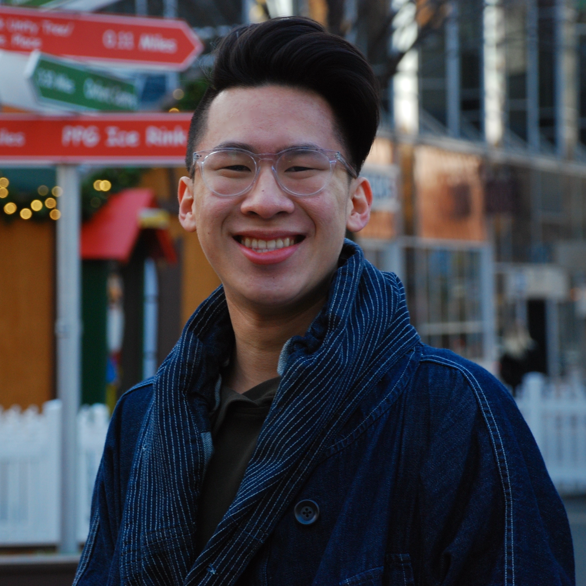

Hi there! I'm a sophomore at Carnegie Mellon studying Electrical and Computer Engineering. Specifically, I have academic interests in systems programming, autonomous driving, and quantitative finance. I will also be serving as a TA for CS 15-213: Introduction to Computer Systems this Spring.
Last summer, I did research at the Pittsburgh Supercomputing Center in parallel computing, machine learning, and their applications to high performance computational studies. I also attended Capital One's Software Engineering Summit at the end of the summer.
Next summer, I will be working on core systems development as a software engineering intern at TransMarket Group, a quantitative proprietary trading firm in Chicago West Loop.
I began working on this site towards the end of June 2018. In addition to being a host for my professional portfolio, this project was also meant to also serve as a collection of my thoughts and to track personal change and growth throughout the rest of college and beyond.
Feel free to contact me at bradley.m.zhou@gmail.com for anything!
What I do on campus!
Asian Students Association
 Booth 2018, 3rd place (first time in 4 years :DDD)
Booth 2018, 3rd place (first time in 4 years :DDD)
Carnegie Mellon's Asian Student Association is the largest cultural student organization on campus. Things we do include IMs, culture nights, tight-knit family systems, and Booth. I had the pleasure of serving as the previous head of public relations my freshman/sophomore year.
Club Tennis
 Sectionals 2018
Sectionals 2018
I am an active member of Carnegie Mellon's Club Tennis team. We represent Carnegie Mellon in USTA's competitive Tennis on Campus events.
Central Church
 Retreat 2018
Retreat 2018
Central Church is the English-speaking congregation of the Korean Central Church of Pittsburgh, predominantly offering Carnegie Mellon and Pitt students Sunday Service as well as deeper Friday night small groups.
My other hobbies and interests!
Other things I enjoy include tennis, basketball/basketball analytics, men's fashion, mechanical keyboards, raw denim, and cute animal gifs.